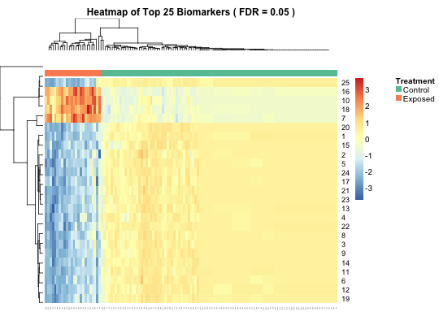

Heatmap of the contributions of a select subset of biomarkers to the variable importance measure changes as assessed by influence curve-based estimation, across all subjects.
heatmap_biotmle(x, ..., designMat, tx = 2, FDRcutoff = 0.05, top = 25)
biotmle as produced by an appropriate call to
biomarkertmlesuperheat::superheat as
necessarylimma::lmFit).heatmap (from the superheat package) using hierarchical clustering to plot the changes in the variable importance measure for all subjects across a specified top number of biomarkers.
library(dplyr) data(illuminaData) data(biomarkertmleOut) "%ni%" = Negate("%in%") W <- illuminaData %>% dplyr::select(which(colnames(.) %in% c("age", "sex", "smoking"))) %>% dplyr::mutate( age = as.numeric((age > quantile(age, 0.25))), sex = I(sex), smoking = I(smoking) ) A <- illuminaData %>% dplyr::select(which(colnames(.) %in% c("benzene"))) A <- A[, 1] Y <- illuminaData %>% dplyr::select(which(colnames(.) %ni% c("age", "sex", "smoking", "benzene", "id"))) geneIDs <- colnames(Y) design <- as.data.frame(cbind(rep(1, nrow(Y)), as.numeric(A == max(unique(A))))) colnames(design) <- c("intercept", "Tx") limmaTMLEout <- limmatmle(biotmle = biomarkerTMLEout, IDs = NULL, designMat = design) heatmap_biotmle(x = limmaTMLEout, designMat = design, FDRcutoff = 0.05, top = 25)